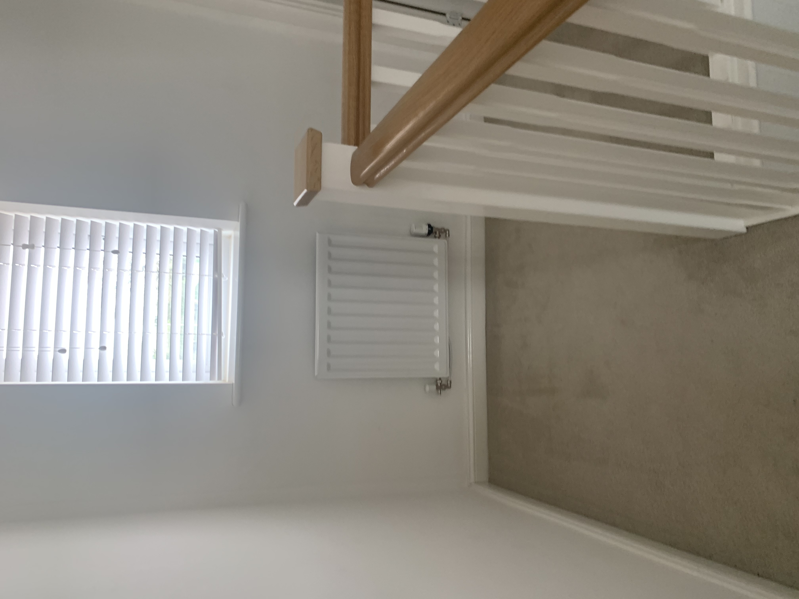
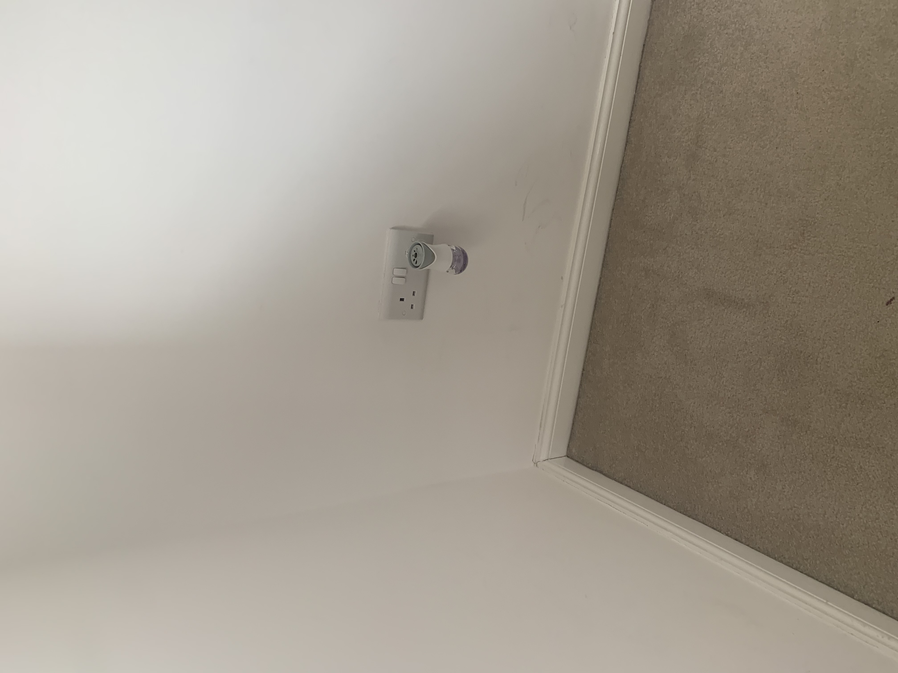
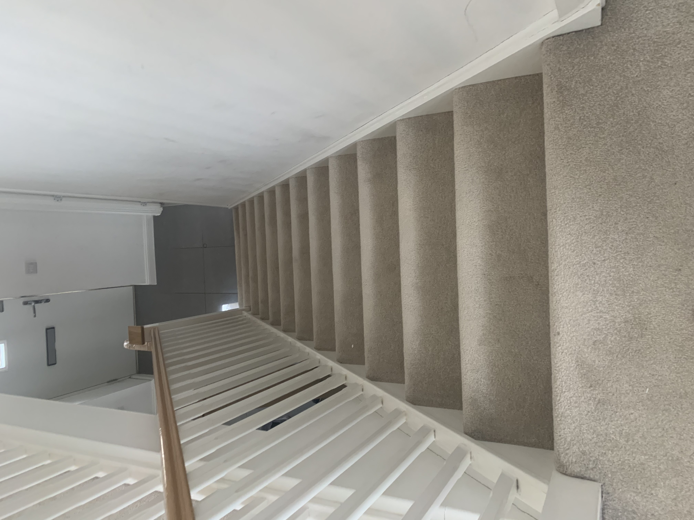
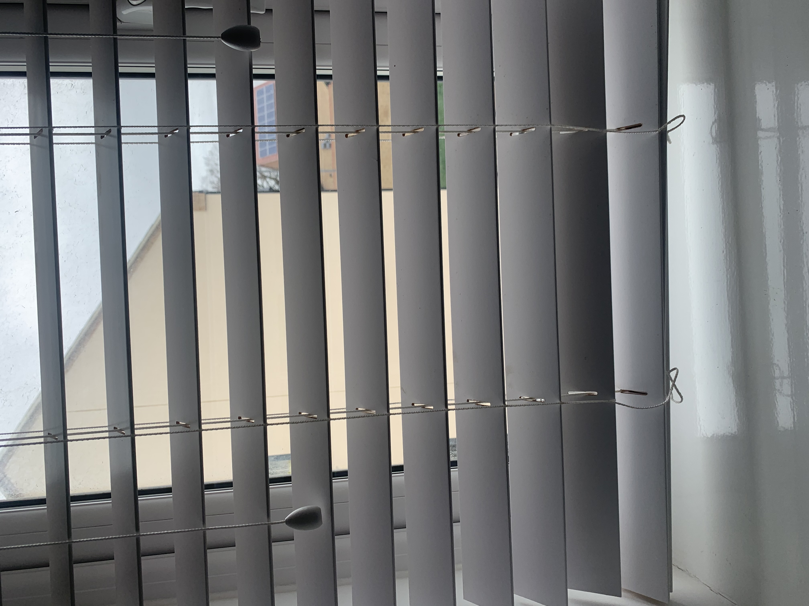

Test image- 
output on googleLens-Radiator
Output on mobile net-door
Test image- 
output on googleLens-PlugPoint,Socket
Output on mobile net- PlugPoints
Test image- 
output on googleLens-Stairs,steps
Output on mobile net- Steps
Test image- 
output on googleLens-Blinds,window
Output on mobile net- window